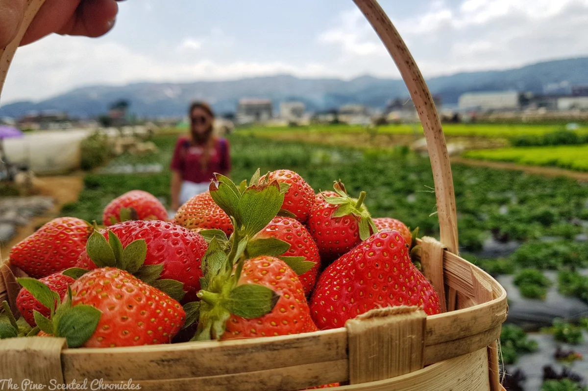

An Iconic Tourist Destination
Baguio, also known as Baguio City, is a mountain resort town located in the northern region of the Philippines. It is the capital of the Benguet province and known for its cool climate and scenic views. It is a popular destination for tourists and locals alike, particularly during the summer months when temperatures in the lowland areas can be quite high.
Baguio is situated in the Cordillera Administrative Region, nestled in the heart of the Cordillera Mountains. The city is approximately 1,500 meters above sea level and is often referred to as the "City of Pines" due to its abundance of pine trees. It is also known for its vibrant culture and rich history.
The city has a mix of colonial and indigenous architecture, including the Tam-Awan Village, which is a replica of a traditional Cordillera village. Baguio is also home to several landmarks and tourist attractions such as Burnham Park, the Tam-Awan Village, the Baguio Cathedral and the Tam-Awan Village, and the Baguio Botanical Garden.
Baguio is also famous for its local market, where you can find a wide variety of fresh produce, native crafts and souvenirs. The city also offers a wide range of outdoor activities such as hiking, camping, and sightseeing. If you wish to go to this wonderful place, Baguio is accessible by bus, jeepney, or private car from Manila, which is a 5-6 hours drive, and also by plane via Loakan airport.
Strawberry Picking
Strawberry picking in Baguio is a popular activity for tourists and locals alike, and it is considered a must-do when visiting the city. Baguio is known for its cool climate and high altitude, which makes it the perfect location for growing strawberries. The city is home to several strawberry farms, where visitors can pick their own strawberries straight from the field.
One of the most popular strawberry farms in Baguio is the La Trinidad Strawberry Farm, which is located in the municipality of La Trinidad, Benguet. The farm offers visitors the opportunity to pick their own strawberries, as well as purchase fresh strawberries, jams, and other strawberry-based products.
Visitors can also take a tour of the farm and learn about the history and process of strawberry cultivation in the area. The tour guides will also provide information on the different varieties of strawberries grown on the farm, and visitors can sample some of the fruits as well.
Other popular strawberry farms in Baguio include the Benguet Strawberry Farm, and the Good Shepherd Strawberry Farm. These farms also offer strawberry picking and farm tours, in addition to a variety of strawberry-based products.
Strawberry picking is a fun and unique experience that you can enjoy while in Baguio. It is a great opportunity to learn about the local agriculture and enjoy fresh, delicious strawberries. The best time to visit the farm is during the strawberry season which is from December to May so keep that in mind when making plans to visit if you want to experience the joy of picking strawberries in the City of Pines.